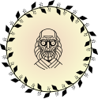

A lot of interesting and unusual things happened on the set and outside, during the shooting of the Game of Thrones eight seasons.
At the same time 20 stuntmen were burning in the frame
Over 5 Million Tweets on Premiere Day
The most numerous cast on TV Show
The most numerous cast on TV Show

World record for the number of illegal downloads of the show